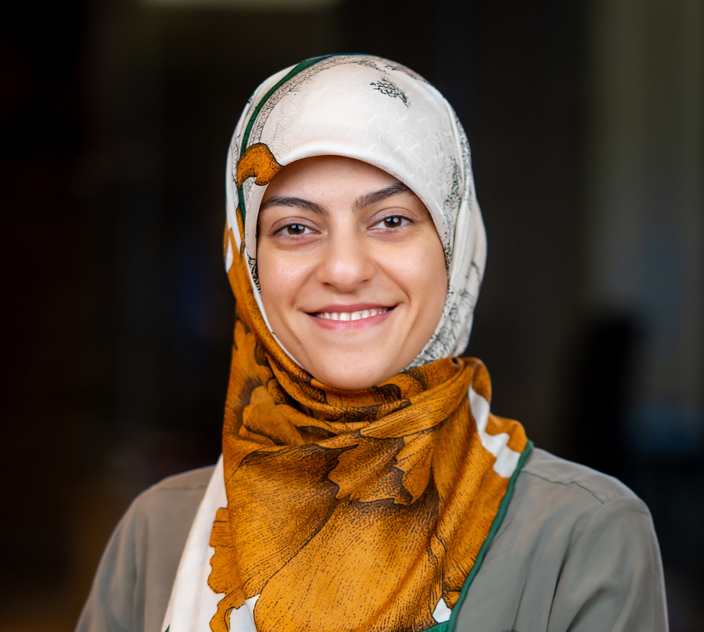

About Me

Driven full-stack developer with a strong foundation in Python and a
deep enthusiasm for the transformative power of technology. My
recent experiences have focused on the dynamic world of modern web
development, where I've become highly proficient in React, Next.js,
and TypeScript, complementing my established back-end skills in
Python and Django. I love contributing to projects which will have a
positive and meaningful impact in the world and human life weather
in the health industry or backing.
I thrive on the
challenges of bringing ideas to life, whether it's implementing
intuitive user interfaces from design specifications, seamlessly
integrating front-end and back-end systems, or optimizing back-end
processes. My background in consulting has cultivated my ability to
rapidly learn and apply new technologies across figureerse projects,
always striving for excellence and efficiency.
I'm
particularly passionate about the potential of technology to improve
lives and connect people globally. I'm drawn to projects that push
the boundaries of what's possible and contribute to a more informed
and interconnected world. My proactive approach and dedication
ensure that I consistently deliver high-quality work, even when
navigating complex challenges and exploring uncharted technological
territory.
I'm eager to connect with fellow innovators, share insights, and
collaborate on initiatives that leverage technology for the
betterment of our world.